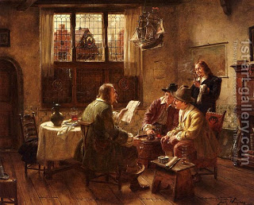

Bava Batra 32 - Chazakah, Case Law #3 - "Why Would He Lie?"

One man said to the other, "What are you doing on this land?" The other one replied "I bought it from you and here is the deed." The challenger said "It is a forged deed and, as you don't claim to have chazakah, you must vacate the property."
The occupant leaned over and whispered to Rabbah, "Yes, it is a forged document. However, I originally had a valid deed, and it got lost. I wanted to bring some document to court."
Rabbah said, "Why would he lie?" He could have said that the deed was valid and he would be believed (either the forgery was very good, or the deed was given before the sale).
Generally "Why would he lie?" is believed, but the claimant must take a Rabbinically imposed oath that he is saying the truth.